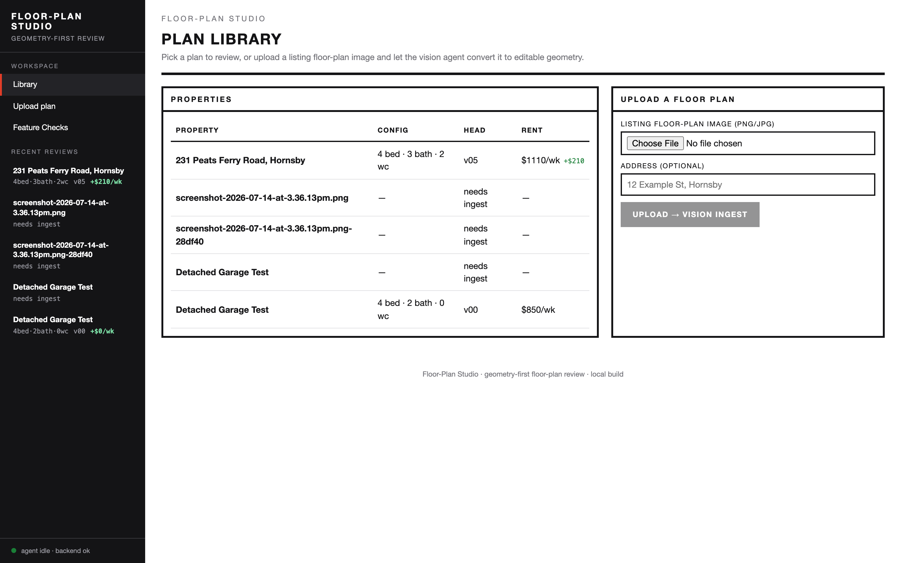
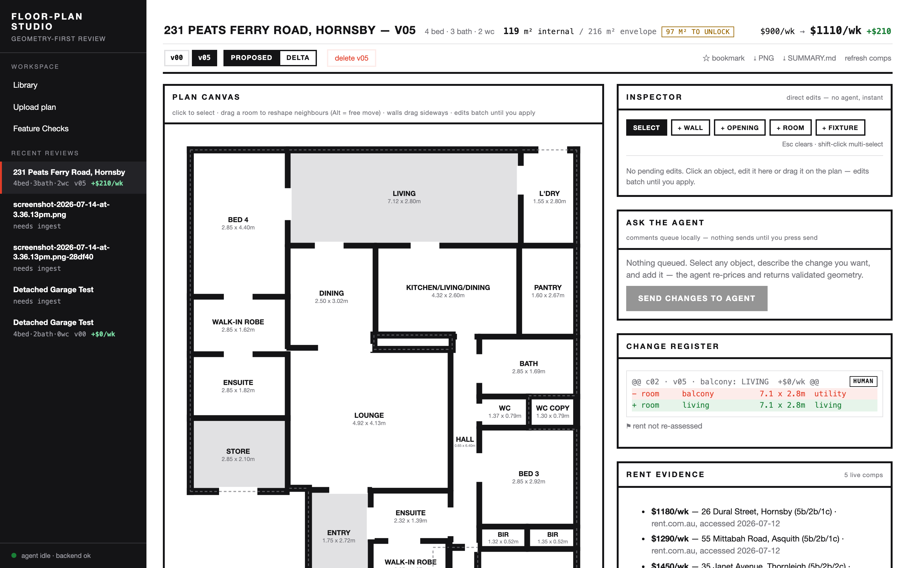
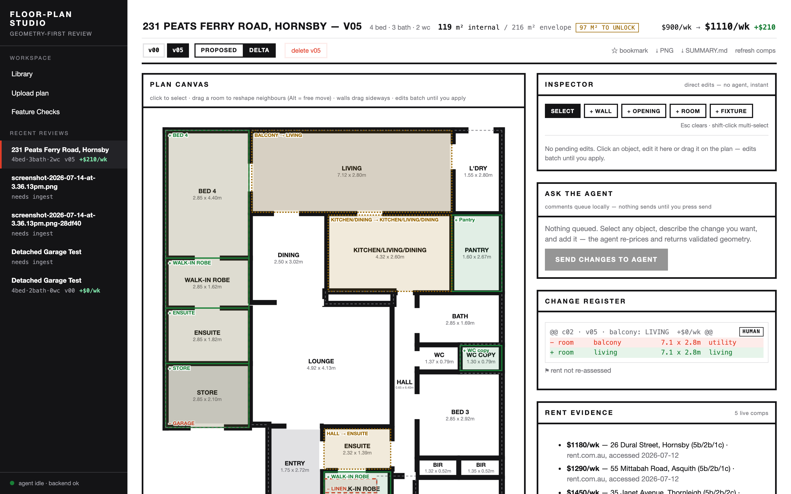
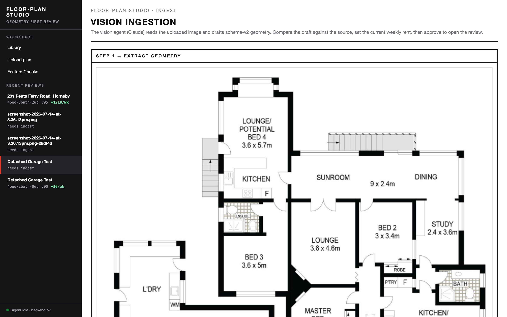
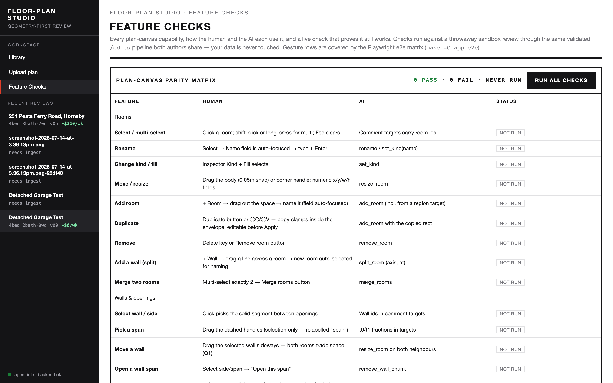

Floor-Plan Studio · Frontend Proposal · 2026-07-15
Restyle Plan — Drafting Ink 2.0
A full pass over the running app (six surfaces, screenshots below) to make it engaging and
user-friendly with functionality unchanged: load a floor plan, edit it with the agent or by hand,
and maximise weekly rent inside the existing envelope. The restyle keeps the Drafting Ink brand and the
locked canvas semantics; it re-architects layout, hierarchy, language, and guidance. One always-run
golden-path test — 231 Peats Ferry Rd ($900/wk → maximise, garage + balcony to internal
space, kitchen redesign, BED 1 walk-in robe + ensuite from the hall entry, front door moved to the lounge)
gates every phase.
Surfaces audited
6
Findings
14 F1–F14
Golden test
231-PFR
Rent story (seed)
+$210/wk
Phases
P0–P5
01
Goal, current state, non-goals
Goal. Same product, better experience: a first-time property owner should be able to upload a
listing floor plan, understand what the agent proposes, steer it, and read the rent uplift — without learning
the internal vocabulary (HEAD, vision ingest,
@@ c02 · v05 @@) first.
Current state. The app is functionally complete and well-tested (Feature Checks: 20 PASS · 0 FAIL),
but it is presented as an engineer's console: a scrolling document of stacked cards, raw diff hunks, native file
inputs, and 10px hint strips. The strongest asset — the plan itself and its growing rent — is not staged.
Non-goals. No behaviour changes to the validated op pipeline
(POST /reviews/{id}/edits · /comments), no new canvas semantics,
no backend rework beyond two small optional endpoints flagged in §7. The Feature Checks matrix is the
functionality contract: every existing check must pass unchanged after each phase.
02
Current-state audit — what the screenshots show
Captured 2026-07-15 from the running stack (frontend :5175), seeded 231 Peats Ferry Rd review at v05. Severity: High blocks comprehension for a non-technical user · Med slows everyone down · Low polish.

Plan Library — home screen
F1HighA floor-plan product with no plan imagery on its home screen — the library is a bare table. Thumbnails exist for free: /api/plans/{id}/image and /api/reviews/{id}/versions/{n}/export.png already serve them.
F2HighUpload is a native Choose file input plus a jargon button (UPLOAD → VISION INGEST). No drag-and-drop, no image preview, no progress state.
F3MedStatus vocabulary is internal: HEAD v05, needs ingest. A row like screenshot-2026-07-14-at-3.36.13pm.png-28df40 gives the user no way to finish setup, rename, or delete it — dead rows accumulate.
F4Low"Upload plan" in the nav routes to this same page (#/upload → Library with focus) — two nav items, one destination.

Review — proposed v05 (the core surface)
F5HighThe page is a scrolling document, not a workspace: the tall plan overflows the viewport and the right rail stacks four cards (Inspector, Ask the Agent, Change Register, Rent Evidence) — reading the rent evidence scrolls the plan away. No zoom, no fit-to-view, no visible undo.
F6HighThe rent story — the product's whole point — is a small mono line in the header ($900/wk → $1110/wk +$210). No baseline-vs-comps context, no per-change contribution, no trend across versions.
F7MedVersion pills (v00 v05) and view modes (PROPOSED / DELTA) sit in one row and look like the same control — version identity and lens are conflated.
F8MedUnexplained chip 97 M² TO UNLOCK (envelope headroom) and easy-to-miss flag ⚑ rent not re-assessed — the two numbers a user most needs explained.
F9MedThe Change Register is a raw unified diff (@@ c02 · v05 · balcony: LIVING +$0/wk @@) — precise, but unreadable without knowing diff syntax.
F10MedThe two-lane model (Inspector = instant direct edits · Ask the Agent = queued comments) is genuinely good — but it's explained only by caption sentences inside each card. First-run users get no walkthrough of select → describe → add → send, and the three-state lifecycle (selected / queued / sent) is text, not state you can see.
F11LowCanvas help is one 10px strip ("click to select · drag a room to reshape neighbours (Alt = free move) · …"). Power shortcuts (⌘C/⌘V, ⌘Z, Delete, shift-click) exist per the Feature Checks but are undiscoverable — no cheat sheet.

Review — delta view v00 → v05
F12MedThe delta lens is the most persuasive view in the product (BALCONY → LIVING, − GARAGE, + Pantry…) but there is no on-screen legend for green = added / red = removed / amber = modified, and overlay labels collide with room labels on dense plans.

Vision ingestion — post-upload wizard
F13MedThe three-step flow (extract → verify → set rent & approve) exists but reads as one long page headed STEP 1 — EXTRACT GEOMETRY; no stepper showing where you are, how many steps remain, or what "approve" unlocks. Copy leads with implementation ("drafts schema-v2 geometry").

Feature Checks — parity matrix
F14LowExcellent engineering surface; keep as-is. Two reframes: it lives at #/admin but is presented as a first-class nav item next to Library (confusing for owners), and the golden-path scenario (§5) deserves a row here so product health is visible in-app.
03
What stays locked
Locked — brand & canvas
.claude/skills/frontend-style
Ink-on-paper monochrome chrome; red = selection / negative / destructive, green = positive — meanings never drift.
Canvas semantics: ink walls (exterior thicker), red selection, green/red/amber delta, labels + mono dims always visible on every room.
All numerals in --mono; no shadows, radii, gradients; tokens only from app/frontend/src/styles.css :root.
The shared validated pipeline: humans POST /edits, agent via /comments — one validator, envelope immutable.
New tokens (e.g. --amber-bg) added to styles.css + skill table first, per the do/don't rules.
04
Proposed experience — mocked in Drafting Ink
M1 · Review becomes a workspace, not a document
Full-viewport frame. The canvas owns the centre with floating zoom / fit / undo controls and a persistent
delta legend. The four stacked cards become a tabbed dock (right, 300–360px): EDIT (Inspector),
AGENT (queue), HISTORY (versions + register), RENT (story + comps). A bottom strip separates version
identity (pills, bookmarks) from lens (PROPOSED | DELTA segmented control) — resolving F5, F7, F12.
231 Peats Ferry Road, Hornsby
4 bed · 3 bath · 2 wc · 119 m² internal / 216 m² envelope · 97 m² headroom
$900 → $1,110/wk+$210
estimated weekly rent · 5 live comps · re-priced v05
100%
Living7.12 × 2.80m
Kitchen4.32 × 2.60m
Lounge4.92 × 4.13m
Bed 13.08 × 3.78m
AddedRemovedModified
Edit
Agent 2
History
Rent
Estimated weekly rent
$1,110/wk+$210 · +23%
baseline $900comps $1,180–$1,450
Balcony → living space+$0
Garage → store + robe + ensuite+$95
Kitchen / living / dining + pantry+$60
BED 1 walk-in robe + ensuite+$55
Rent estimate is out of date for the last 1 change — ask the agent to re-price.
v00v02v03v04v05 · latest
ProposedChanges v00 → v05
↓ PNG · ↓ SUMMARY.md · ☆ bookmark
The canvas component (PlanCanvas.tsx, 1,422 lines) is wrapped, not rewritten: zoom/fit is a viewport transform around the existing SVG; selection, drag, and delta rendering are untouched. Fixes F5, F6, F7, F8, F12.
M2 · The register learns to speak — and stays a diff underneath
Each change renders as a sentence with its rent contribution; the exact op diff sits one disclosure away.
Same data, two altitudes — resolving F9 without losing auditability.
Today
raw hunks
@@ c02 · v05 · balcony: LIVING +$0/wk @@HUMAN
− room balcony 7.1 x 2.8m utility
+ room living 7.1 x 2.8m living
Proposed
sentence + disclosure
Balcony converted to living spaceHUMAN · v05
7.1 × 2.8 m brought inside the envelope · rent impact +$0/wk (pending re-price)
▸ show exact ops (1)
M3 · Library sells the work
Card grid with real plan thumbnails (endpoints already exist — F1), rent uplift as the headline, honest
status labels, and upload as a drop-zone with preview and progress (F2, F3). "Upload plan" nav merges into
the library's upload card (F4).
231 Peats Ferry Road, Hornsby
4 bed · 3 bath · 2 wc · v05
$1,110/wk+$210
Open review
source image
Screenshot 2026-07-14
draft — not yet reviewed
Finish setup — 2 steps left
ContinueDelete
⤓
Drop a floor plan
PNG or JPG · or click to browse We'll read the rooms and dimensions for you
M4 · Ingest becomes a visible three-step wizard
Same three actions as today, staged with a stepper and outcome-first copy (F13).
1
Read the plan
We detect rooms, walls and dimensions from your image.
2
Check the rooms
Compare side-by-side with your image; fix anything we misread.
3
Set current rent
Tell us today's weekly rent — then start the review.
Language pass — plain-English primary, drafting flavour in kickers
Today (F3, F8, F13)
Proposed primary label
Where the term survives
UPLOAD → VISION INGEST
"Read my floor plan"
Ingest wizard kicker
needs ingest
"Finish setup — 2 steps left"
—
HEAD · v05
"v05 · latest"
Version pills keep vNN
97 M² TO UNLOCK
"97 m² headroom" + tooltip: "the envelope allows 216 m²; the plan uses 119 m²"
Chip stays mono
⚑ rent not re-assessed
Amber banner: "Rent estimate is out of date — ask the agent to re-price"
Register footnote
DELTA
"Changes v00 → v05"
Register kicker
@@ c02 · v05 … @@
Sentence rows (M2)
"Show exact ops" disclosure
Guidance & accessibility floor
First-run coach (F10): one dismissible overlay on the review page tracing select → describe → add → send; stored per browser.
Shortcut sheet (F11): ? opens a card listing ⌘C/⌘V, ⌘Z, Delete, shift-click, Esc — sourced from the Feature Checks registry so it can't drift.
Empty states: empty library → the upload card, full-width; empty change list → "Select a room on the plan to start".
A11y: 12px minimum for interactive labels (hint strips move to tooltips/sheet), visible focus rings, ＋/−/△ glyphs beside delta colours (colour is never the only signal), aria-live on agent status, keyboard path for pill/tab navigation.
Agent presence: the bottom-left status dot becomes a dock-tab state — AGENT tab shows a busy chip while working, and a toast lands when a new version arrives.
05
The golden-path test — 231 Peats Ferry Rd, always run
The user-specified canonical scenario becomes an automated regression that every phase (and every future
change) must keep green. It exercises the full product promise: load a floor plan → maximise weekly rent
within the existing boundaries.
flowchart TD
UP["Upload 231-peats-ferry-rd/original.png<br/>(fresh plan, sandboxed)"] --> ING["Vision ingest drafts geometry"]
ING --> APPR["Approve @ $900/wk baseline<br/>3 bed · 1 bath · 1 wc · 95 m² internal / 216 m² envelope"]
APPR --> OPS["Apply canonical scope ops via the shared /edits pipeline:<br/>balcony → living · garage → store + robe + ensuite<br/>kitchen → kitchen/living/dining + pantry<br/>hall entry → BED 1 walk-in robe + ensuite<br/>front door relocated to lounge"]
OPS --> CHK{"Assertions"}
CHK -->|"all pass"| PASS["GREEN — phase may ship<br/>row visible in Feature Checks"]
CHK -->|"any fail"| FAIL["RED — phase blocked"]
Step
Assert
Tier
Upload 231-peats-ferry-rd/original.png through the UI dropzone (Playwright)
Plan appears; ingest wizard reachable; no console errors
T1 · deterministic
Ingest → approve with baseline $900/wk
v00 = 3 bed · 1 bath · 1 wc, 95 m² internal, 216 m² envelope
T1
Apply the five canonical changes via the same validated pipeline the UI uses
Every op accepted by the validator; envelope bytes identical before/after
T1
Read head version
Config = 4 bed · 3 bath · 2 wc; internal area > 95 m²; garage/balcony rooms gone; BED 1 has robe + ensuite; entry door on lounge wall
T1
Delta view renders
Green adds / red removals / amber mods present; every room label + dims visible (locked canvas contract)
Wiring. New app/demo/e2e_golden_path.py (same Python-Playwright harness as
e2e_feature_matrix.py, runs against a throwaway sandbox review, never touches real data) ·
Makefile target make -C app golden, included in make -C app test and
smoke · one row in the Feature Checks matrix ("Golden path — 231 PFR") via
frontend/src/features.ts so the result is visible in-app (F14). Tier 2 runs where web access
exists and is skipped — loudly, never silently — in offline CI.
06
Phased plan — each phase ships behind a green golden path
P0
Golden-path test first
gate~½ day
Files
app/demo/e2e_golden_path.py (new)
app/Makefile (golden target)
frontend/src/features.ts (+1 row)
Acceptance
§5 table T1 green on the current UI before any restyle lands
Runs in make test; visible in Feature Checks
P1
Workspace frame — canvas-first review
F5~2 days
Files
pages/Review.tsx (layout re-home)
styles.css (workspace grid tokens/classes)
PlanCanvas.tsx — wrapped in a zoom/fit viewport only; internals untouched
Acceptance
Canvas fills viewport at every window size; zoom / fit / undo controls float on-canvas
No page-level vertical scroll on the review route
Golden path + all 20 feature checks green (gesture coordinates re-verified)
Baseline → proposed meter with comps range; per-change $ contributions; stale-rent amber banner
Every register row expands to its exact ops (audit parity)
Golden path green
P4
Library cards, dropzone upload, ingest stepper
F1 F2F3 F13~2 days
Files
pages/Library.tsx (cards + dropzone; nav "Upload plan" merges — F4)
pages/Ingest.tsx (stepper + copy)
Optional backend: DELETE /api/plans/{id} for dead drafts (§7)
Acceptance
Thumbnails from existing image/export endpoints; drag-drop with preview + progress
Draft cards say what's left and continue into the wizard
Golden path green — including the upload step through the new dropzone
P5
Language, guidance, accessibility
F8 F10 F11~1–2 days
Files
Copy map applied across components (§4 table)
First-run coach, ? shortcut sheet (fed from features.ts), empty states
Focus rings, aria-live agent status, delta glyphs
Acceptance
No interactive label below 12px; keyboard walk of tabs/pills/dock
Coach shows once, dismissible, never for returning users
Golden path + full matrix green; skill file updated with any new tokens
07
Risks & failure modes
Risk
Mitigation
E2E gesture coordinates break when the layout changes — the parity matrix drives real mouse gestures.
P0 lands the golden path before any layout change; each phase re-runs the full matrix and fixes selectors/coordinates in the same PR. That's why layout (P1) and dock (P2) are separate phases.
PlanCanvas regressions — 1,422 lines of interaction code nobody wants to re-test by hand.
Never modify its internals in this plan; zoom/fit is an outer viewport transform. Canvas semantics are covered by existing checks.
Thumbnails for un-reviewed drafts — no version exists to export.
Fall back to the uploaded source via /api/plans/{id}/image (exists today).
Per-change rent contributions — register hunks currently carry +$0/wk until re-priced.
Show "pending re-price" honestly (amber), sum only priced changes; no invented numbers.
Tier-2 rent assertion flakes offline (no live comps).
T2 is skipped-with-warning in offline runs; T1 geometry assertions always run.
Draft deletion needs a new endpoint (only sandbox delete exists).
Optional small addition in P4; if declined, draft cards get "Continue" only and the plan still holds.
08
Decisions — queue your answers
Pick options below (selections stay local), press Queue answer per question, then use the review bar's Send. You can also annotate any screenshot, mockup, finding, or phase directly.
Floor-Plan Studio · restyle proposal s07 · design source: the app's own Drafting Ink system
(app/frontend/src/styles.css + .claude/skills/frontend-style) ·
screenshots captured live 2026-07-15 · concept proposals — not architectural, planning, or financial advice.